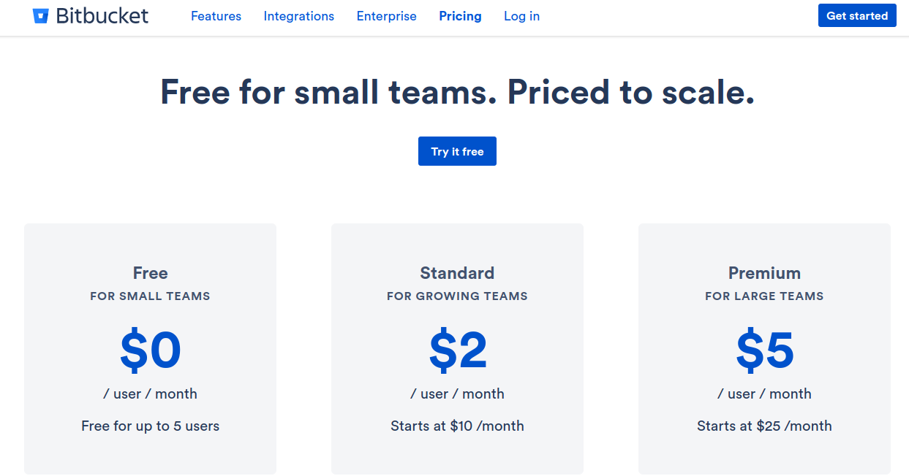
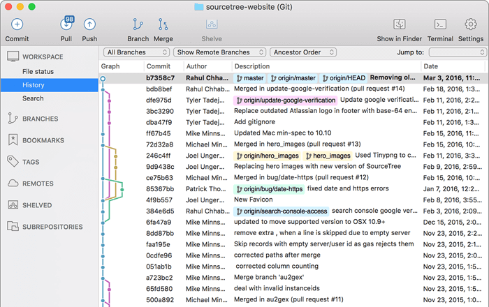

WordPress Tuluá
Buenas practicas en para desarrollo en WordPress
por Faber Andrés Vergara
@e_mamut
Qué es ?
- Control de versiones
- Vigila SOLO los archivos
- Alternativas
- SVN (SubVersion)
- CVS
- Perforce
- Bazaar
- Herramienta poderosa en el mercado
- Potenciador comunidad Open Source
Qué carpetas debería contener un repositorio de WP?
.gitignore
Recurso propio de [Fuente]
# Ignore everything in the root except the "wp-content" directory.
/*
!.gitignore
!wp-content/
# Ignore everything in the "wp-content" directory, except the "plugins"
# and "themes" directories.
wp-content/*
!wp-content/plugins/
!wp-content/themes/
# Ignore everything in the "plugins" directory, except the plugins you
# specify (see the commented-out examples for hints on how to do this.)
wp-content/plugins/*
# !wp-content/plugins/my-single-file-plugin.php
# !wp-content/plugins/my-directory-plugin/
# Ignore everything in the "themes" directory, except the themes you
# specify (see the commented-out example for a hint on how to do this.)
wp-content/themes/*
# !wp-content/themes/my-theme/
Desarrollo de Plugins y Temas
- Decidir el enfoque: repositorios independientes o general
- Delegar instalacion de plugins dependientes
- .gitignore node_modules
.gitkeep o .keep
Convencion creada por usuarios de

Branch Work Flow

Servidores
Github
Pros
- Repositorios ilimitados gratuitos públicos
- Fuerte comunidad OpenSource (Pull Request e Issues)
- Github Pages emamut.github.io
Contras
- Pagar por repositorios privados
- Github Desktop solo Win y MacOS
Github
BitBucket
Pros
- Empresa consolidada en el mercado con User Groups
- Integración natural con herramientas agiles (Jira, Bamboo, Confluence, Trello, etc)
- BitBucket Pages
Contras
- Poca comunidad
- UI compleja pero mejorada
BitBucket
Gitlab
Pros
- Totalmente gratuito
- Auto-hosteable
Contras
- Gitlab rm -rf (Comunicado)
Gitlab
GUI
SourceTree
GitKraken
SmartGit

Gracias!
- https://github.com/wp-tulua/git-on-wp-dev (Repositorio)
- Reveal.js (Presentación)
- FontAwesome (Iconos)
De Balboa pal mundo!